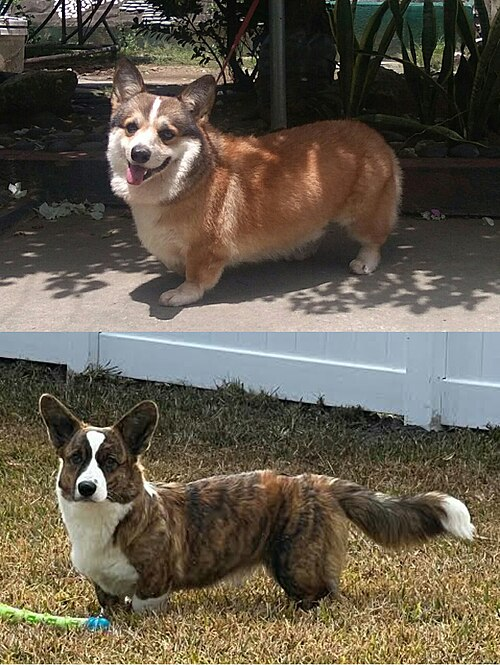

the welsh corgi
The Welsh Corgi or Corgi, plural Corgis, or occasionally the etymologically consistent Corgwn; is a small type of herding dog that originated in Wales. The name corgi is thought to be derived from the Welsh words cor and ci (which is mutated to gi) , meaning "dwarf" and "dog", respectively.
